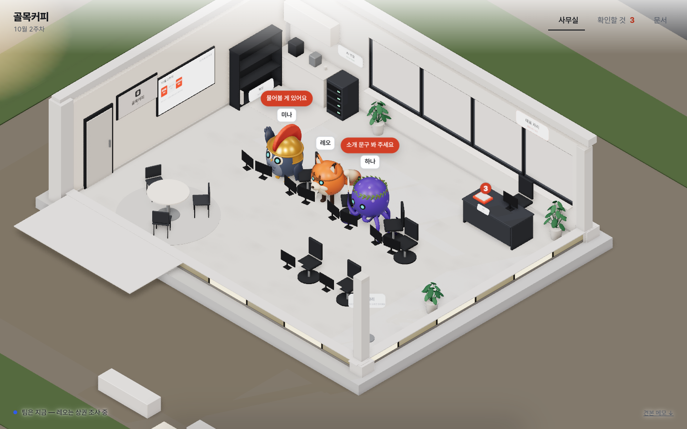
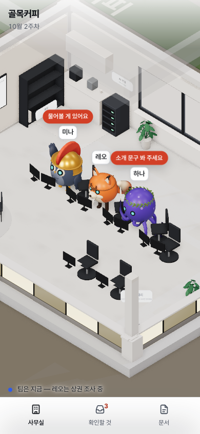
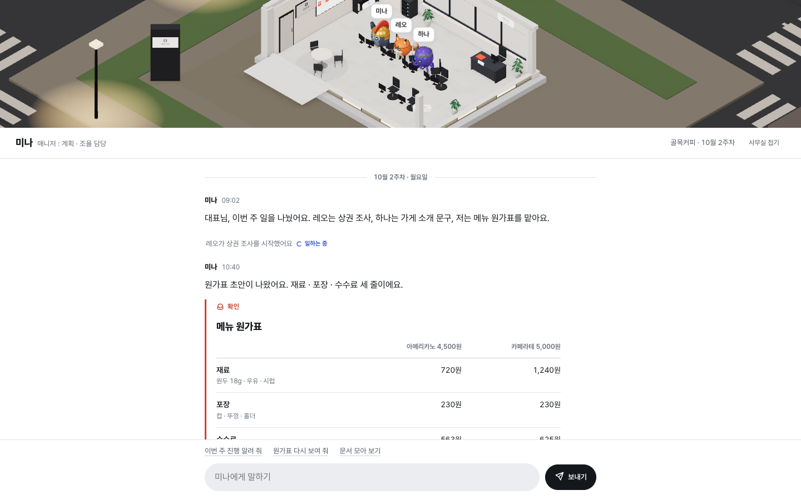
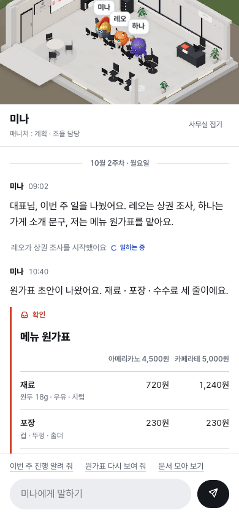
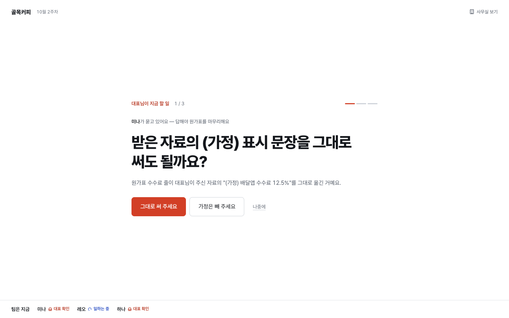
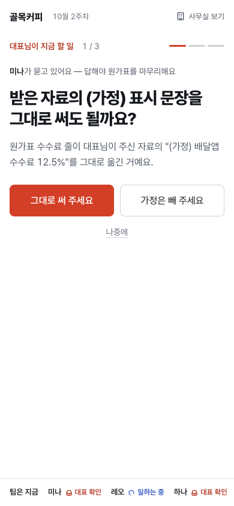
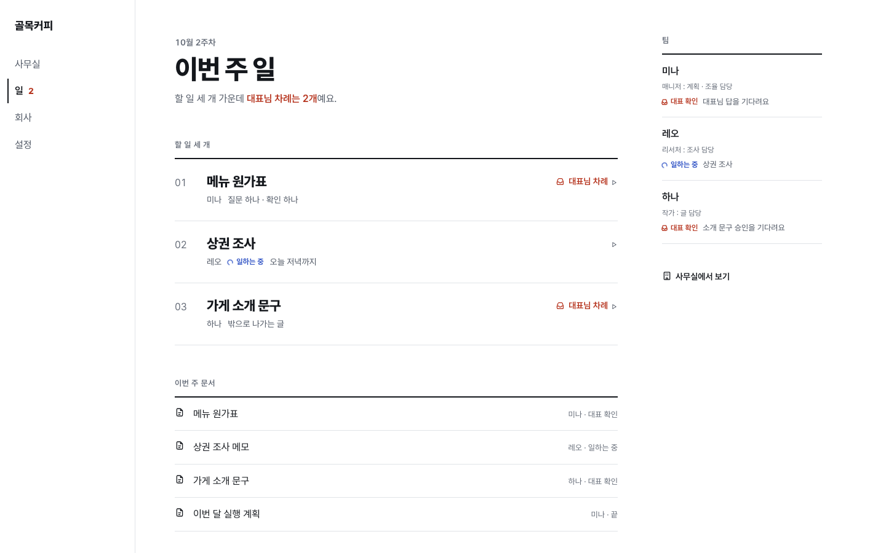
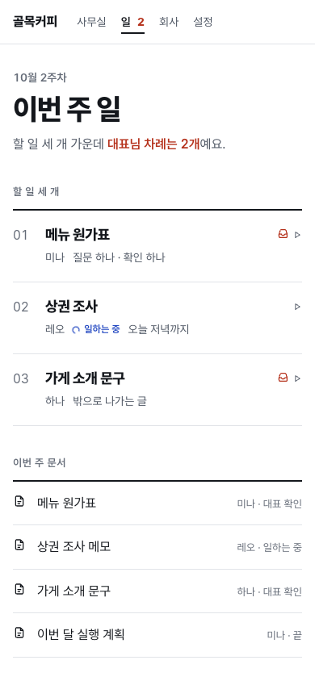

화면 단순화 견본 네 개
지금 화면은 한 번에 보이는 개념이 많고(회차 · 블록 · 등급 · 레벨 · 수치), 같은 일이 세 번 나오고, 둥근 흰 상자 안에 상자가 겹쳐 요즘 AI 서비스 대시보드처럼 보여요. 같은 장면 하나를 네 방향으로 만들었어요. 상자 대신 면 · 선 · 글자 크기 · 여백으로 나눴어요.
장면 — 골목커피 · 10월 2주차. 매니저 미나가 메뉴 원가표를 만들어 대표 확인을 기다리고, (가정) 표시 문장을 그대로 써도 될지 묻고 있어요. 리서처 레오는 상권 조사 중, 작가 하나가 쓴 가게 소개 문구는 밖으로 나가는 글이라 '원문 확인 → 승인' 두 단계를 거쳐요(결정 80). 버튼을 누르면 다음 상태로 바뀌어요(고정 데이터, 서버 연결 없음).
-
A
사무실이 화면 전체추천
진짜 3D 사무실이 화면을 꽉 채워요. 대표님이 볼 것은 직원 머리 위 인주색 말풍선뿐이고, 누르면 아래에서 얇은 시트가 올라와 거기서 끝내요. 메뉴는 사무실 · 확인할 것 · 문서 셋.
열기어둡게

-
B


-
C


-
D


| A 사무실 | B 대화 | C 오늘 할 일 | D 문서 | |
|---|---|---|---|---|
| 메뉴 | 3 | 0(대화 하나) | 0 | 4 |
| 첫 화면에 보이는 것 | 사무실 · 말풍선 | 미나의 말 | 할 일 하나 | 할 일 세 줄 · 팀 |
| 3D 사무실 | 화면 전체(진짜 3D) | 위쪽 접히는 창(진짜 3D) | 링크 뒤 | 메뉴 뒤 |
| 원문 확인 → 승인 | 하나의 시트 안 | 대화 속 | 한 장 안 | 펼친 줄 안 |
| 잘 맞는 사람 | 보면서 맡기는 대표 | 말로 시키는 대표 | 바쁜 대표 · 휴대폰 | 지금 쓰는 사람 |
| 만들기 | 중간 — 3D 위 시트 · 말풍선 | 중간 — 대화 기록 구조 | 쉬움 | 가장 쉬움 |
디자이너 추천 — A, 첫 장으로 C를 얹는 조합까지
A만이 '자라는 3D 사무실'을 장식이 아니라 화면 그 자체로 되돌려요. 결정 86(쉬운 건 앞에서)과 결정 84(컴퓨터에 익숙하지 않은 창업자)에 맞게, 대표님이 배울 것이 '말풍선을 누른다' 하나뿐이에요.
B는 익숙하지만 요즘 AI 대화창과 가장 닮아 우리만의 얼굴이 약하고, D는 가장 덜 바꾸지만 3D가 여전히 따로 떨어져 있어요. C는 가장 쉬운데 할 일이 없을 때 화면이 비어요 — 그래서 A의 '확인할 것'을 C처럼 한 장씩 넘기는 방식으로 쓰는 조합을 다음 단계로 제안해요.